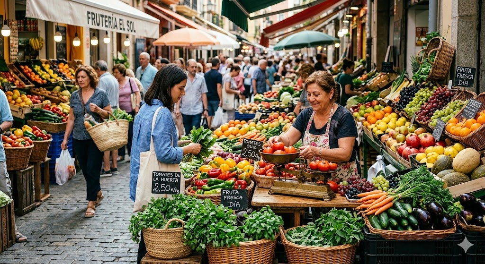

Sobre Nosotros
Nuestra Historia
En Legumbrería JM, nuestra pasión es llevar la frescura del campo directamente a tu hogar. Nacimos con el propósito de conectar a los productores locales con las familias que valoran la calidad y la nutrición en su mesa diaria.
Seleccionamos cuidadosamente cada fruto, cada legumbre y cada hortaliza para asegurar que solo lo mejor llegue a ti. Creemos en la alimentación consciente y en el apoyo al agro nacional.

Información de Contacto
✉️
Correo Electrónico
legumbreriajmla84@gmail.com
📍
Ubicación
La 84, Medellín, Colombia